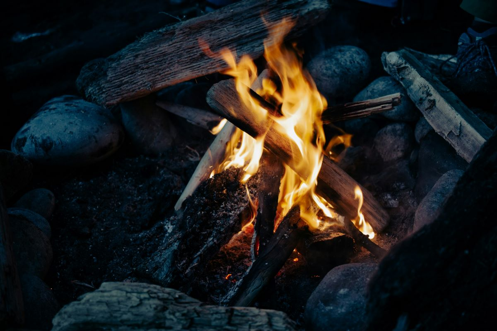

The 10 Essentials
The Ten Essentials are designed to help us hikers be prepared for the unexpected, whether it's an injury, getting lost, or spending an unplanned night outdoors. While modern technology like GPS and mobile apps can enhance safety, the basics like a map, compass, and proper clothing remain just as important. It's important to tailor your hiking pack to the specific conditions of the adventure you plan to embark upon. Take into consideration things like: terrain, weather, and duration.
The Ten Essentials were originally compiled by The Mountaineers, a Seattle-based outdoor organization, in the 1930s and have since been updated to reflect modern gear and knowledge. This widely respected safety and packing system was formalized in the third edition of the book titled:
Mountaineering: The Freedom of the Hills
Below is a list of items every hiker should consider adding to their gear list.
Happy Trails
Fellow Wanderers!
1 - Navigation
GPS devices can be a critical tool for hikers because they provide accurate navigation, especially when hiking in remote or unfamiliar areas.
2 - Headlamp

These lightweight headlamps provide hands-free illumination, which is crutical for allowing hikers to navigate safely in low-light conditions.
3 - Sun Protection

Wearing clothing that protects against UV rays, wide-brimmed hats, sunglasses and applying sunscreen will protect you from the sun's ultraviolet rays.
4 - First Aid
Having a first-aid kit handy allows you to immediately address injuries like cuts, scrapes, blisters, or insect bites. This little kit provides me peace of mind.
5 - Knife

You may not need a knife all the time, but it's indispensable when needed. Cutting cord, removing a wood sliver, or cutting through brush...knife is a handy tool.
6 - Fire

A match or lighter would allow you to start a fire in an emergency situation, provide warmth, a means to cook or a signaling device.
7 - Shelter

You may only be going on a quick day hike, but a lightweight emergency tent could provide you shelter if the weather takes a turn for the worse.
8 - Extra Food
Having food to snack on when hiking is essential because your body is burning energy quickly. Having extra food is handy in case you decide to trek more miles then planned, or run across a fellow hiker in need.
9 - Extra Water
Water is crutical to preventing dehydration. Having more then enough is always better then being stuck out there with muscle cramps or heatstroke.
10 - Extra Clothes

I always have a pair of dry socks and an extra puffy jacket with me, even on a quick hike. You never know when you'll truck through a puddle or experience a colder then expected temperature change.